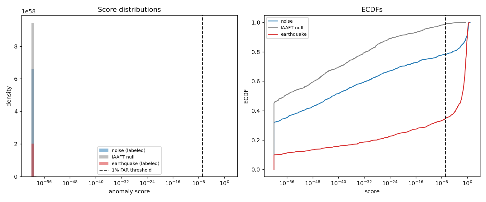

One noise trace in five is not noise
A catalogue says these 750 seismograms contain nothing. The system looked at the raw waveforms and found real arrivals sitting in a fifth of them.
1The detector never sees a label
The score is built from four ingredients measured on the raw three-component waveform: STA/LTA amplitude (is there a burst?), rectilinearity and planarity (does the ground move along a line or in a plane, the way a body wave makes it move, rather than wandering?), and cross-channel onset coincidence (do the three components start moving at the same instant?). No labels enter anywhere.
The threshold is not chosen by eye either. It is calibrated to a 1% false-alarm rate against IAAFT surrogates, synthetic traces built to match each real trace's amplitude distribution and power spectrum while destroying its phase structure. Measured on those nulls the realised false-alarm rate is 1.07%, so the calibration holds.

2It is the coincidence term doing the work
Amplitude alone finds almost nothing. A naive amplitude-only STA/LTA detector at the same 1% false-alarm rate flags just 2.0% of the same traces, an order of magnitude less. And when the coincidence term alone is ablated out of the full score, prevalence collapses straight back to 2.0%.
That single ablation is the load-bearing result: what separates these traces from background is not that they are loud, it is that three components start moving together. Contrasts between flagged and unflagged traces on onset spread, rectilinearity and planarity all land at p < 10−16.
3Its own hypothesis was wrong, and it said so
Before running, the system pre-registered a guess: that short-period and accelerometer channels (HN, EH, SH) would be the contaminated ones. That was refuted. Prevalence is lowest on HN accelerometers at 2.4% and highest on the broadband channels, 29.1% for HH and 32.8% for BH.
Channel code is not the operative variable at all. Prevalence runs from 0% to 65% across networks (χ² p = 3.5×10−14), a stronger split than channel type gives. The right reading is that this is a site-specific noise environment effect, not an instrument-class effect. This is why the run's own verdict is recorded as mixed rather than supported: the headline prevalence held, the mechanism guess did not.
4Does it survive being poked?
The prevalence is stable across false-alarm rates from 0.1% to 5%, across three independent null models, and across four STA/LTA window settings. The station-cluster bootstrap confirms it is not an artefact of a handful of chatty stations.
5Every number on this page
| Noise-labelled traces flagged as coherent arrivals | 21.7% (163/750) |
| 95% confidence interval | 18.8 – 24.9% |
| Station-cluster bootstrap CI | 17.9 – 25.8% |
| Realised false-alarm rate on the null | 1.07% |
| Amplitude-only baseline, same false-alarm rate | 2.0% |
| Full score with the coincidence term removed | 2.0% |
| Prevalence on HN accelerometer channels | 2.4% |
| Prevalence on HH / BH broadband channels | 29.1% / 32.8% |
| Flagged traces' median percentile in the earthquake distribution | 77.1 |
What this does not show
It does not show that the STEAD labels are wrong. A trace labelled noise means no catalogued source, and a coherent local arrival too small to be catalogued is exactly what you would expect to find in that category. The claim is about what is present in the waveform, not about mislabelling. The system's own pre-registered hypothesis about instrument type was also refuted, which is why the run is recorded as mixed; the site-level explanation that replaced it was arrived at after seeing the breakdown, so it should be treated as a hypothesis for a fresh dataset rather than as a tested result.
engine/examples/stead_seismic